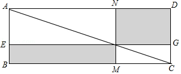

2017年北京市中考数学试题 · 数学解答题 第20题
20．（5分）数学家吴文俊院士非常重视古代数学家贾宪提出的“从长方形对角线上任一点作两条分别平行于两邻边的直线，则所容两长方形面积相等（如图所示）”这一推论，他从这一推论出发，利用“出入相补”原理复原了《海岛算经》九题古证．
（以上材料来源于《古证复原的原理》、《吴文俊与中国数学》和《古代世界数学泰斗刘徽》）
请根据该图完成这个推论的证明过程．
证明：S矩形NFGD=S△ADC﹣（S△ANF+S△FGC），S矩形EBMF=S△ABC﹣（ + ）．
易知，S△ADC=S△ABC， = ， = ．
可得S矩形NFGD=S矩形EBMF．
